01
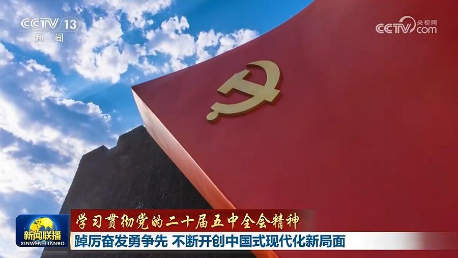
【学习贯彻党的二十届五中全会精神】踔厉奋发勇争先 不断开创中国式现代化新局面
连日来，中管企业、中管金融企业和中管高校干部职工认真学习党的二十届五中全会精神。大家表示，新征程上，要把思想和行动统一到以习近平同志为核心的党中央决策部署上来，踔厉奋发勇争先，以高质量党建引领高质量发展，不断开创中国式现代化新局面。


连日来，中管企业、中管金融企业和中管高校干部职工认真学习党的二十届五中全会精神。大家表示，新征程上，要把思想和行动统一到以习近平同志为核心的党中央决策部署上来，踔厉奋发勇争先，以高质量党建引领高质量发展，不断开创中国式现代化新局面。
近日，中共中央印发了《关于党的二十一大代表选举工作的通知》，对二十一大代表选举工作作出全面部署。中央组织部召开会议作出具体安排。
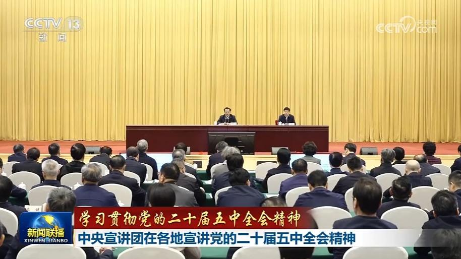
连日来，学习贯彻党的二十届五中全会精神中央宣讲团成员在重庆、山东、青海等地宣讲，并深入一线与干部群众交流座谈，推动全会精神深入人心。
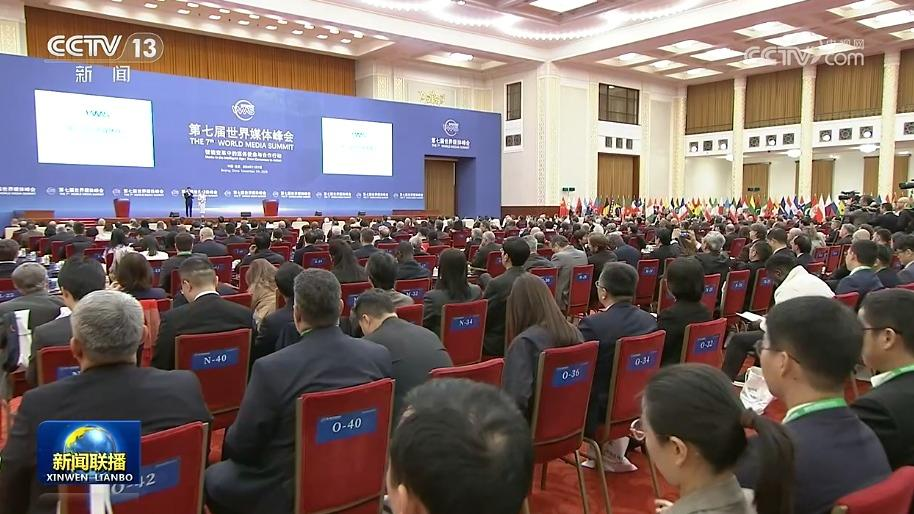
第七届世界媒体峰会7日在北京开幕。与会嘉宾认为，当前全球人工智能技术创新进入前所未有的活跃期，为媒体发展带来了机遇和挑战。技术发展越迅猛，越是要坚持人文精神、长期主义。各国媒体要深化务实合作，不断丰富优质内容供给，加快推进数智化赋能，携手促进文明交流互鉴，助力完善人工智能治理，为推动构建人类命运共同体贡献智慧和力量。
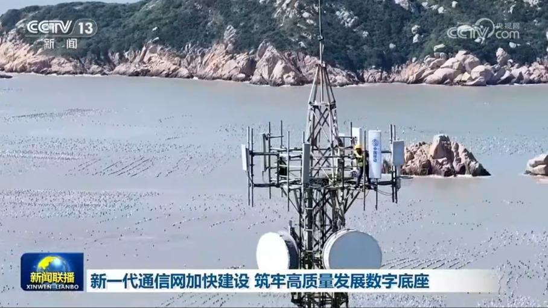
新一代通信网是贯通数字和实体、连接当下与未来的关键数字纽带。“十五五”开局之年，各地加快推动新一代通信网建设，夯实高质量发展底座。
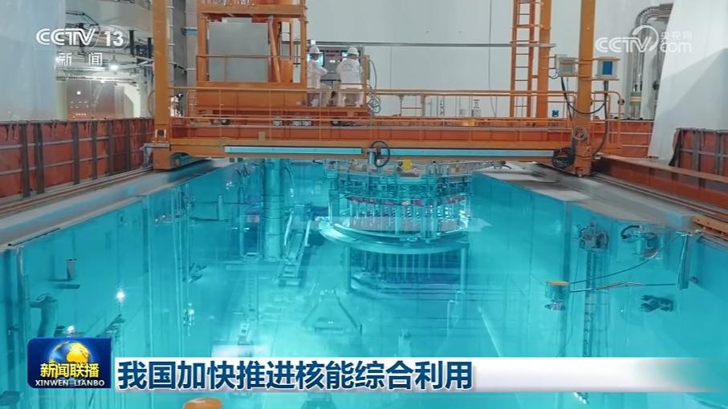
今年以来，在保障电力供应基础上，我国积极拓展核能供热供汽等多元场景，加快推进核能综合利用。
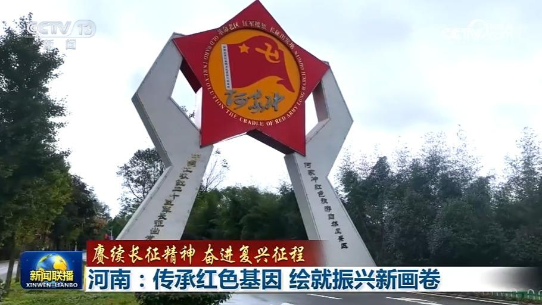
中国工农红军第二十五军从河南踏上长征，并率先抵达陕北，为党中央把中国革命的大本营安置在西北创造了条件。九十余载岁月流转，中原大地红色血脉代代相传，以实干开拓新路，书写革命老区高质量发展的时代答卷。
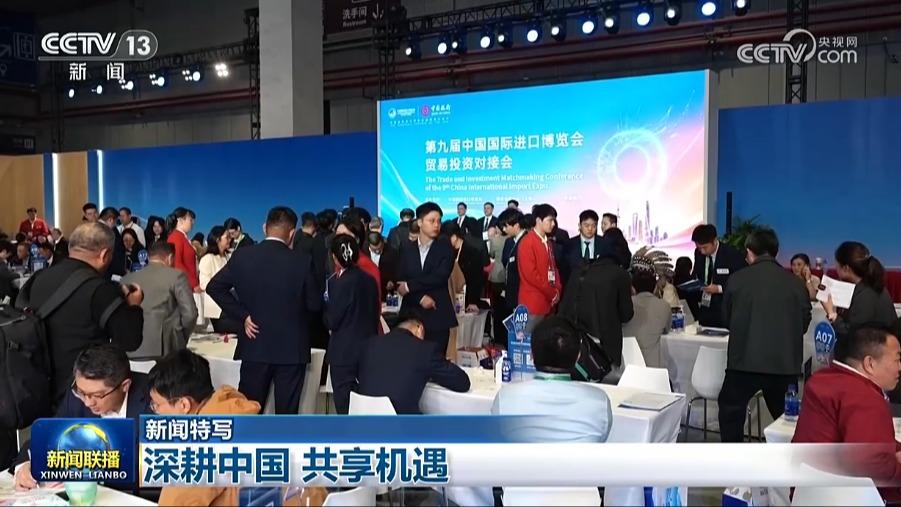
第九届中国国际进口博览会正在上海举行。展馆里，尽管各国参展商说着不同的语言，但都表达着同一个心声：看好中国、深耕中国。
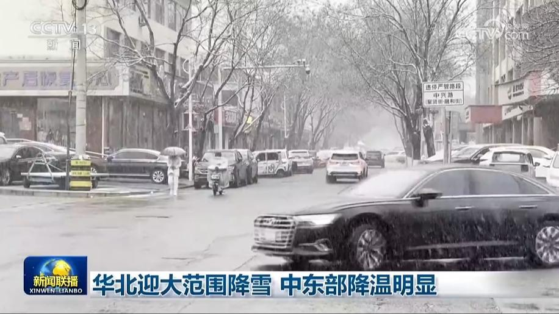
新一轮冷空气影响我国。今天（11月7日），北京、河北局地降雪。中央气象台预计降雪最强时段将出现在今天夜间到明天早晨，内蒙古、辽宁、山西、河北、北京、天津等地部分地区有大到暴雪，局地大暴雪。为此，北京在降雪集中的区域，提前调度铲冰除雪设备、应急物资等，布设了161处应急保障站点。河北承德统筹调配除雪机械，多举措防范高速路面的结冰风险。
截至10月末我国外汇储备规模为34052亿美元
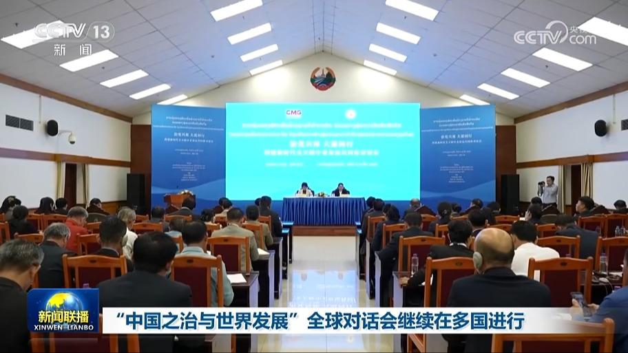
连日来，中国中央广播电视总台“中国之治与世界发展”全球对话会分别在俄罗斯、加纳等国陆续举行。总台CGTN还在保加利亚、西班牙、墨西哥、老挝等国举办多场海外宣介活动。各国嘉宾围绕“中国之治”的成功经验和发展成就展开深入探讨。……
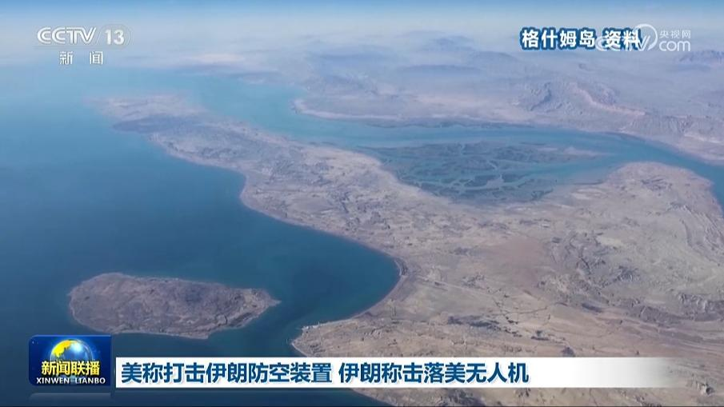
美国总统特朗普6日称，美军当天对伊朗实施了小规模打击，目标是伊朗制造的一个小型防空装置。据伊朗媒体今天（11月7日）报道，两枚导弹击中了伊朗格什姆岛上的设施，目前暂未收到人员伤亡的报告。报道还称，伊朗军方在格什姆岛上空击落一架美军MQ-9无人机。
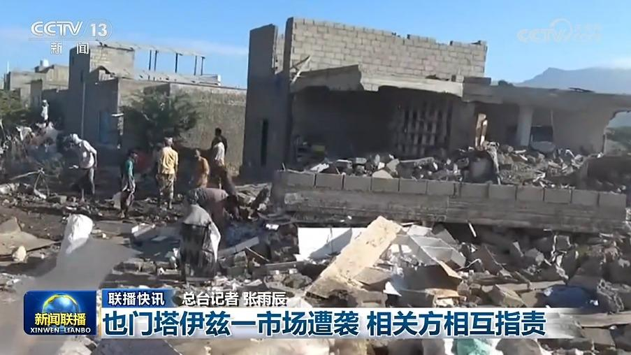
也门塔伊兹一市场遭袭 相关方相互指责
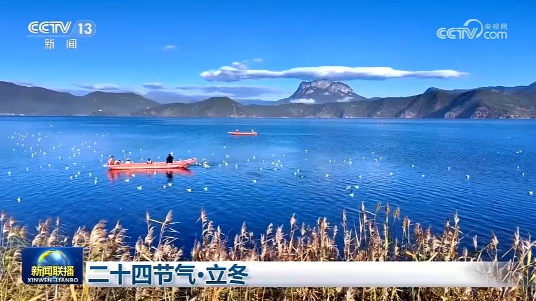
立冬是冬季的第一个节气。节目的最后，我们一起欣赏这个时节的自然之美和文化意蕴。